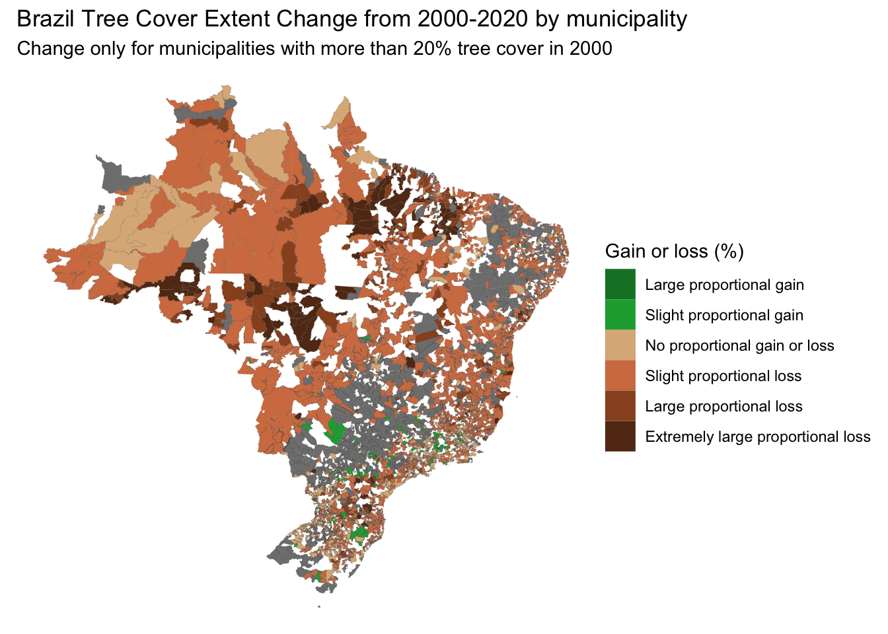

tree_cover_loss_brazil <- tree_cover_loss_brazil %>%mutate(loss_2000.2020_ha = tc_loss_ha_2001+tc_loss_ha_2002+tc_loss_ha_2003+tc_loss_ha_2004+tc_loss_ha_2005+tc_loss_ha_2006+tc_loss_ha_2007+tc_loss_ha_2008+tc_loss_ha_2009+tc_loss_ha_2010+tc_loss_ha_2011+tc_loss_ha_2012+tc_loss_ha_2013+tc_loss_ha_2014+tc_loss_ha_2015+tc_loss_ha_2016+tc_loss_ha_2017+tc_loss_ha_2018+tc_loss_ha_2019+tc_loss_ha_2020 ) %>%mutate(extent_2020_ha = extent_2000_ha + (gain_2000.2020_ha- loss_2000.2020_ha) ## If the forest was 10 in 2000, and then it gained 3 and then lost 5. It would be 10 + (3-5) = 10-2 = 8 )head(tree_cover_loss_brazil)
Warning in left_join(., muni_sf, by = "name_muni"): Detected an unexpected many-to-many relationship between `x` and `y`.
ℹ Row 16 of `x` matches multiple rows in `y`.
ℹ Row 308 of `y` matches multiple rows in `x`.
ℹ If a many-to-many relationship is expected, set `relationship =
"many-to-many"` to silence this warning.
Adjusting Extend ha 2000 and 2010 to be proportional to the sizes of the municipalities
mapping_BR <- mapping_BR %>%mutate(relative_extent_per_size2000 = (extent_2000_ha/area_ha)*100,relative_extent_per_size2010 = (extent_2010_ha/area_ha)*100,relative_extent_per_size2020 = (extent_2020_ha/area_ha)*100 )mapping_BR <- mapping_BR %>%mutate(relative_change_2000_2010 = relative_extent_per_size2010 - relative_extent_per_size2000) %>%#If it was 10 in 2000, and 12 in 2010, then it would be 12-10 = 2 (positive number), which means that now there is more tree cover loss mutate(relative_change_2010_2020 = relative_extent_per_size2020 - relative_extent_per_size2010) %>%mutate(relative_change_2000_2020 = relative_extent_per_size2020 - relative_extent_per_size2000)
mapping_BR <- mapping_BR %>%mutate(actualChange =case_when( relative_change_2000_2020 >=11& relative_extent_per_size2000 >20~"Large proportional gain", relative_change_2000_2020 >=1& relative_change_2000_2020 <=10& relative_extent_per_size2000 >20~"Slight proportional gain", relative_change_2000_2020 >=-1& relative_change_2000_2020 <=1& relative_extent_per_size2000 >20~"No proportional gain or loss", relative_change_2000_2020 <=-1& relative_change_2000_2020 >=-10& relative_extent_per_size2000 >20~"Slight proportional loss", relative_change_2000_2020 <=-11& relative_change_2000_2020 >=-20& relative_extent_per_size2000 >20~"Large proportional loss", relative_change_2000_2020 <-20& relative_extent_per_size2000 >20~"Extremely large proportional loss", relative_extent_per_size2000 <20~"Less than 30% tree cover in 2000",is.na(relative_change_2000_2020) ~"No data available", TRUE~"Other" ))%>%mutate(actualChange =factor(actualChange, levels =c("Large proportional gain", "Slight proportional gain", "No proportional gain or loss", "Slight proportional loss", "Large proportional loss", "Extremely large proportional loss","Less than 30% tree cover in 2000","No data available", "Other" )))mapping_BR <- mapping_BR %>%mutate(factor(actualChange))custom_colors <-c("Large proportional gain"="#138030", "Slight proportional gain"="#19a93f", "No proportional gain or loss"="#ddb588" , "Slight proportional loss"="#d37d4f", "Large proportional loss"="#985125", "Extremely large proportional loss"="#623518","Less than 20% tree cover in 2000"="#9e9e9e", "No data available"="#000000")
Final Extent Change from 2000 to 2020 for areas
tree_extent_change_2000_2020_basedOnOGconditions <-ggplot() +geom_sf(data = mapping_BR, aes(fill = actualChange, geometry = geom), lwd =0.02) +scale_fill_manual(values = custom_colors, name ="Gain or loss (%)") +labs(title ="Brazil Tree Cover Extent Change from 2000-2020 by municipality", subtitle ="Change only for municipalities with more than 20% tree cover in 2000") +theme_void()tree_extent_change_2000_2020_basedOnOGconditions

What is the visualization showing? Tree Cover Extend Change, but with discrete levels that reduce the levels and therefore it is less confusing than when seeing a gradient.
What are the main insights from this visualization? When overlapping this map with the bounds on the protected areas and the Amazon Tropical forest, we found that the areas under “Extreme large proportional loss” belong to the buffer zone of protected areas. These are vulnerable regions to illegal logging depending on the enforcement of the environmental laws (which could depend with whoever is in charge).
What are the limitations of this visualization? The are many regions missing from our dataset. We need to show the bounds of the protected areas and investigate further those municipalities that had tree cover extend gain.